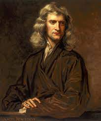

Isaac Newton
1643-1727
Father of Modern Science
Sir Isaac Newton was a mathematician and an English scientist. He is considered to be one of the most intelligent people of all time. He formulated the law of universal gravitation and wrote the laws of motion. Newton developed a form of calculus and contributed to the study of light.Isaac Newton was the greatest English mathematician of his generation. He laid the foundation for differential and integral calculus. His work on optics and gravitation make him one of the greatest scientists the world has known.
Biography
| born | 4 January 1643 at Woolsthorpe-by-Colsterworth |
| Died | 31 March 1727 at Kensington |
| Resting place | Westminster Abbey |
| Education | Trinity college,Cambridge(M.A.,1668) |
| Known for | |
| Awards |